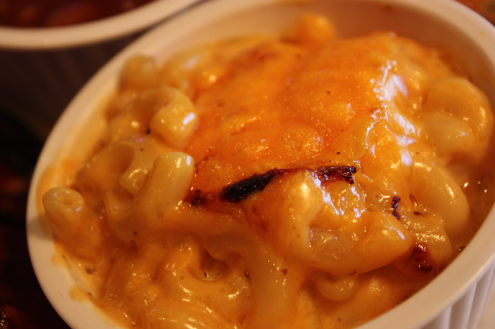

Easy, Creamy Mac and Cheese

"Mac and Cheese" by tedmurphy is licensed under CC BY 2.0 
 .
.
Description
This is the same recipe as J. Kenji Lopez-Alt's 3 ingredient stovetop mac and cheese, but with less cheese. Maybe it's my brand of cheese, but I find a full 6 ounces as the original recipe calls for makes a gloopier sauce. I like my sauce a little thinner, but it's all a matter of personal preference.
Ingredients
- 6 ounces elbow macaroni
- 6 ounces evaporated milk
- 4 ounces cheddar cheese
- salt, to taste
Steps
- Cook the macaroni in a medium saucepan, in just enouch cold water to cover the pasta. Bring to a boil and salt; cook about 6 minutes until pasta is nearly al dente, stirring frequently.
- Add evaporated milk. Once it is boiling, add cheese and reduce heat to low. Cook about 2 minutes, stirring, until the milk and cheese have formed a rich, smooth, creamy sauce. Season and serve.
Return to the main page